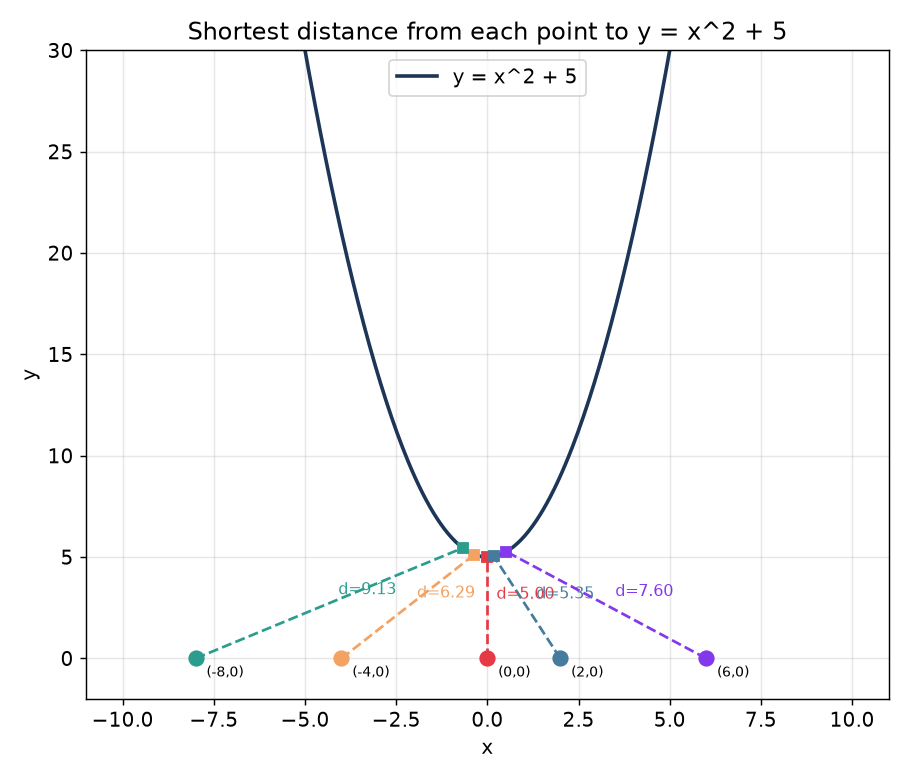
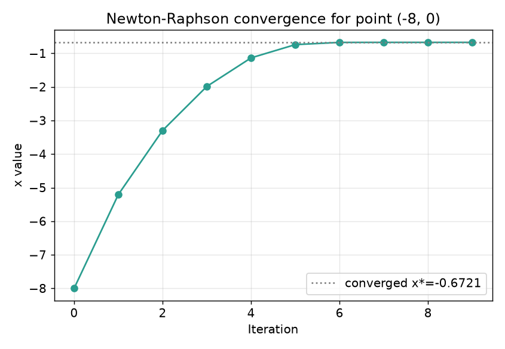
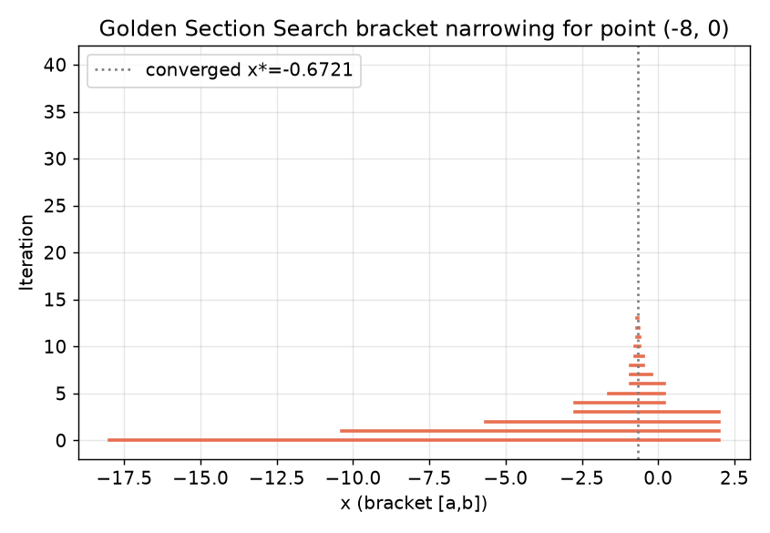
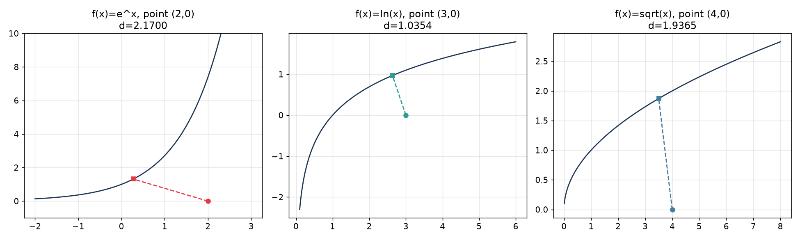
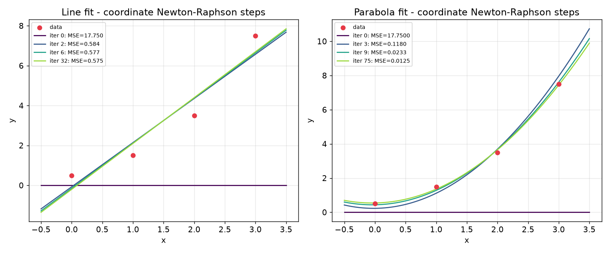
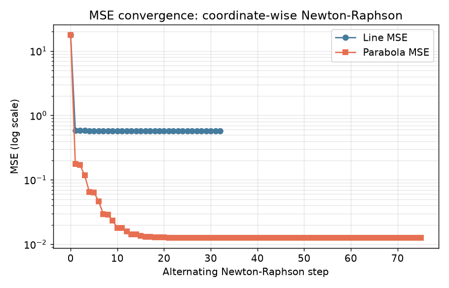

SYDE 572 - Larissa Rudenko
The squared distance from a point \((x_0,y_0)\) to a curve \(y=f(x)\) is:
\[ D(x) = (x-x_0)^2 + (f(x)-y_0)^2 \]
We're using \(f(x) = x^2+5\) and 5 points: (0,0), (-4,0), (-8,0), (2,0), (6,0).
Take the derivative and set it to 0:
\[ D'(x) = 2(x-x_0) + 2(f(x)-y_0)f'(x) = 0 \]
Worked out for point (0,0):
\( D(x) = x^2 + (x^2+5)^2 = x^4 + 11x^2 + 25 \)
\( D'(x) = 4x^3 + 22x = x(4x^2+22) \)
Since \(4x^2+22\) is always positive, the only real root is x = 0. That gives the closest point (0,5) and distance = 5.
| Point | x* on curve | y* | distance |
|---|---|---|---|
| (0, 0) | 0.000000 | 5.000000 | 5.000000 |
| (-4, 0) | -0.355470 | 5.126359 | 6.289845 |
| (-8, 0) | -0.672078 | 5.451689 | 9.133420 |
| (2, 0) | 0.180745 | 5.032669 | 5.351396 |
| (6, 0) | 0.519904 | 5.270300 | 7.603125 |

Runs Newton's method on D'(x) = 0 directly using D''(x). Converges fast when derivatives are known.

Doesn't need derivatives, just brackets [a,b] and narrows using the golden ratio.

Same two functions work for any f/f'/f'' you pass in - tried it on exp, log, and sqrt:

Points: (0, 0.5), (1, 1.5), (2, 3.5), (3, 7.5). Fitting y = mx+b and y = ax^2+bx+c by minimizing MSE.
\[ \text{MSE} = \frac{1}{n}\sum (y_i - \hat{f}(x_i))^2 \]
Set each partial derivative of MSE to 0 and solve the resulting linear system.
Per the assignment instructions: optimize one parameter holding the other(s) fixed with a Newton step, then switch, repeat.


def find_distance_newton(x0, y0, f, df, ddf, initial_guess=0.0,
tolerance=1e-7, max_iter=100):
x = initial_guess
for _ in range(max_iter):
D_prime = 2 * (x - x0) + 2 * (f(x) - y0) * df(x)
D_double_prime = 2 + 2 * (df(x) ** 2) + 2 * (f(x) - y0) * ddf(x)
next_x = x - D_prime / D_double_prime
if abs(next_x - x) < tolerance:
x = next_x
break
x = next_x
return ((x - x0) ** 2 + (f(x) - y0) ** 2) ** 0.5, x
def golden_section_search(x0, y0, f, a, b, tolerance=1e-7):
phi = (1 + 5 ** 0.5) / 2
resphi = 2 - phi
dist_sq = lambda x: (x - x0) ** 2 + (f(x) - y0) ** 2
x1, x2 = a + resphi * (b - a), b - resphi * (b - a)
f_x1, f_x2 = dist_sq(x1), dist_sq(x2)
while abs(b - a) > tolerance:
if f_x1 < f_x2:
b, x2, f_x2 = x2, x1, f_x1
x1 = a + resphi * (b - a)
f_x1 = dist_sq(x1)
else:
a, x1, f_x1 = x1, x2, f_x2
x2 = b - resphi * (b - a)
f_x2 = dist_sq(x2)
best_x = (a + b) / 2
return dist_sq(best_x) ** 0.5, best_xm, b = 0.0, 0.0
for it in range(16):
g = (2/n) * np.sum((m*X + b - Y) * X) # dMSE/dm
gg = (2/n) * np.sum(X**2) # d2MSE/dm2
m -= g / gg
g = (2/n) * np.sum(m*X + b - Y) # dMSE/db
gg = 2.0
b -= g / ggFull scripts (point_to_curve.py, part2_fit_numeric.py) are in this folder if you want to run them yourself.
Larissa Rudenko - Fall 2026